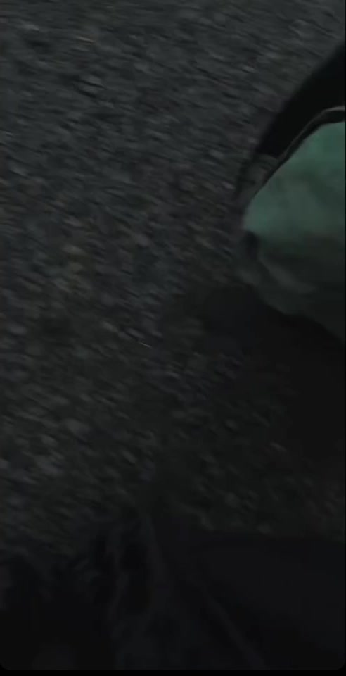

02 / 06
Direction · Camera2.39 : 116 : 9
Music video
Field at Dusk
Dancers, a red pickup, golden hour
Tap to skip
Filmmaker · Producer · Photographer
Austin, Texas30.2672° N · 97.7431° W
Reel 01 · Selected work06 features
02 / 06
Direction · Camera2.39 : 116 : 9
Music video
Dancers, a red pickup, golden hour

03 / 06
Direction · CameraFull frame · B&W
Music video
Rider, revolver, saguaro

04 / 06
Camera · Edit2.39 : 1 · Night
Music video
Motorcycle, dusk, headlights

05 / 06
Direction · Camera9 : 16 · Still
Short · Personal
Umbrella, pines, campfire

06 / 06
Camera2.76 : 1
Music video
Film that feels lived in, not staged.
Reel 02 · Long form
Forty-eight seconds, muted, cut from live shows, music videos and the road. Tap to run it.

Roll 02 · Stills
FR 01 / 06



Stills from the filmsSwipe
JP Silva makes films and photographs that chase a feeling before they chase a look. A live show, a music video, a quiet minute behind the scenes: the work is about honest emotion, caught while it is still raw.
Born in Bauru, São Paulo, Brazil, and in the United States since his teens. Austin since 2025, and wherever the tour goes next.


Film · live music · music videos · tour · portraits
Email enabled at launch